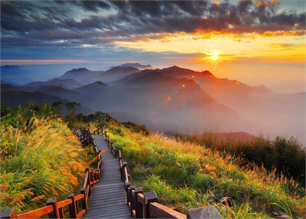

| Sun Moon Lake | Wen Wu Temple | Ci En Pagoda |
|---|---|---|
|
|
|
| To be picked up from your Taipei hotel lobby, we will drive to Nantou which is the second largest county of Taiwan. Its mountainous area makes it a tourist destination;Sun Moon Lake is located in this county. Sun Moon Lake is the only natural big lake in Taiwan. The southern part of Kuang Hua Island is shaped like a new moon, and the northern part is shaped like a sun; hence the name Sun Moon Lake. Scenic resources, the most famous sights around Sun Moon Lake, are the Te Hua House, Kuang Hua Island, the Xuanzang Temple, the Ci En Pagoda, and the Wen Wu Temple and so on. The natural forests bordering these roads are good places for bird watching. | Wen Wu Temple is located at the shoulder of mountain where is on the north of Sun Moon Lake. It was built in 1938. People worried the water of Sun Moon Lake might cover Lungfung Temple and Ihuatang of Shuishotsun, they built Wen Wu Temple. The Wen Wu Temple is 2 (Lungfung Temple and Ihuatang) in 1. It was rebuilt in 1969. Its gate is face to the north. People pray the Civil Saint of Confucius, the Military Saint of Kuankung, and the Established God of two temples at the Wen Wu Temple. The temple is popular among students. | * Ci En Pagoda is located on Sha Ba Lan Mountain near Sun Moon Lake. It was built by Chiang Kai-shek in memory of his mother in 1971. The construction was very difficult because the materials had to be shipped over the lake and moved up the mountain. It has became the famous landmark of Sun Moon Lake. Surrounding the tower are beautiful plants and trees and there are stone tables and chairs for visitors to take a rest. The Ci En Pagoda overlooks Lalu Island and Sun Moon Lake.Hotel: Fleur de Chine, Sun Moon Lake(Mountain view room) |
| Alishan | Alishan Train | Alishan recreation forest |
|---|---|---|
|  | ||
| On the second day, we will go to Alishan to watch the beautiful sunset because Alishan ('Ali Mountain' in Chinese) is renowned for its alpine forests, ethnic minority culture, people. The scenic area covers four Chiayi County townships including Alishan, Meishan, Zhuqi, and Fanlu, occupying an area of 32,700 hectares. | The famous Alishan Forest Railway is also a place which is very renowned for its natural scenes with a smell of old train. You can also view the great view when you are on the train and you can take many photos there. It is a must for the visitors to ride this train when you go to Alishan. | After riding the train, you can take a look at the Alishan recreation forest. You can feel a pure and fresh air blowing through your face which is the best feel ever. You can then enjoy the various beautiful places created for the visitors to take photos and enjoy nature.Hotel: Nice Prince |
| Lukang Old Street | Lukang Folk Arts Museum | Lukang Longshan Temple |
|---|---|---|
 |
 |
 |
| On the last day of Taiwan trip, you will go to the Lukang Old Street, which is one of the three distinct places in Lukang. Old Market Street is made up of the curved, red-tiled lanes of today's Putou, Yaolin, and Tayu streets. Both sides of the streets are lined with newly renovated old-style shop buildings that feature intensely interesting internal room layouts and old-style exteriors. Here you can feel some of the atmosphere of old Lukang. | Since you have travelled the old street already. So you will then arrive the Folk Arts Museum. The museum holds more than 6,000 articles. The items exhibited in the museum mostly dated from the mid-Ching dynasty to the early years of the Republic. Household, travel, and recreational items, as well as religious implements and celebratory artifacts are displayed for visitors. The museum has a strong local flavor. | As the last place for this Taiwan trip, the temples in Lukang will be the best. The old temples of Lukang, too, are veritable collections of art and masterpieces of architecture. They are well worth careful observation. You can also pay homage to these temples and take your last Taiwan trip photos here. And you will stay your last night at a small motel. The next day you will be back to the airport to go back to your country. |
| Price List | |
|---|---|
| Numbers of people | Usual Price |
| Single | $1120 |
| Dual | $2200 |
| Triple | $3300 |
| Four and above | $1100 for each |